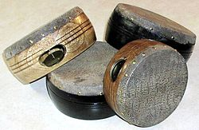

The kanjira, khanjira, khanjiri or ganjira, a South Indian frame drum, is an
instrument of the tambourine family. As a folk and bhajan instrument, it has
been used for many centuries.
It was modified to a frame drum with a single pair
of jingles by Manpoondia Pillai in the 1880s, who is credited with bringing the
instrument to the classical stage. It is used primarily in concerts of Carnatic
music (South Indian classical music) as a supporting instrument for the
mridangam.
Construction:

Similar to the Western tambourine, it consists of a circular frame made of the
wood of the jackfruit tree, between 7 and 9 inches in width and 2 to 4 inches in
depth.
It is covered on one side with a drumhead made of monitor lizard skin
(specifically the Bengal monitor, Varanus bengalensis, now an endangered species
in India), while the other side is left open. The frame has a single slit which
contain three to four small metal discs (often old coins) that jingle when the
kanjira is played.
Play:
The kanjira is a relatively difficult Indian drum to play, especially in South
Indian Carnatic music, for reasons including the complexity of the percussion
patterns used in Indian music.
It is normally played with the palm and fingers
of the right hand, while the left hand supports the drum. The fingertips of the
left hand can be used to bend the pitch by applying pressure near the outer rim.
It is not tuned to any particular pitch, unlike the mridangam or the ghatam.
Normally, without, it has a very high pitched sound. To get a good bass sound,
the performer reduces the tension of the drumhead by sprinkling water on the
inside of the instrument. This process may have to be repeated during a
concert to maintain a good sound.
However, if the instrument is too moist, it
will have a dead tone, requiring 5–10 minutes to dry. Tone is also affected by
external temperature and moisture conditions. Performers typically carry a
couple of kanjiras so that they can keep at least one in perfectly tuned
condition at any given time.
Players:
Packiri Shunmugam Pillai
Dakshinamurthy Pillai
G. Harishankar
Bangalore Amrit
C.P.Vyasa Vittala
B.S.Purushottam
G.Guruprasanna
V. Selvaganesh
T S Nandakumar
B. Shree Sundarkumar
N. Ganesh Kumar
Pete Lockett